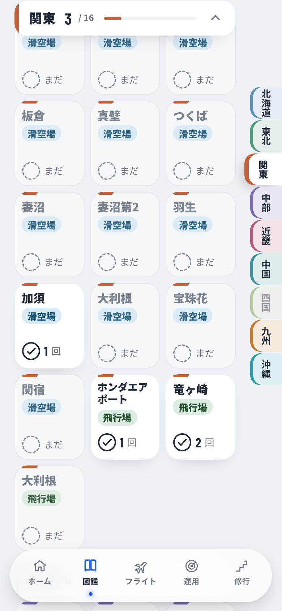

ブランチ design/zukan-airfields・画面案だけ（アプリには入れない）。11/11 本人「今のまま別の図鑑で目立たせる」。
決めた形

03b 1版：関東の扉まで送ったところ扉が上に止まり、ツメの関東が出る。行った枠は白、まだは薄い低い画面（667）：png/03b-airfield-kanto-667.pngmain の web/ を http.server 8765 で開く → make/build.py（デモに入り、inject.js で図鑑の上に描き足して HTML に書き出す）→ make/shoot.py <このフォルダ> → make/make_pages.py。夜は今のアプリにまだ夜の画面がないので、暗い配色に夜の決まり（琥珀は使わず白い字）を足して近づけた。